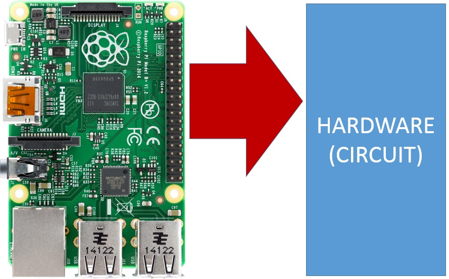
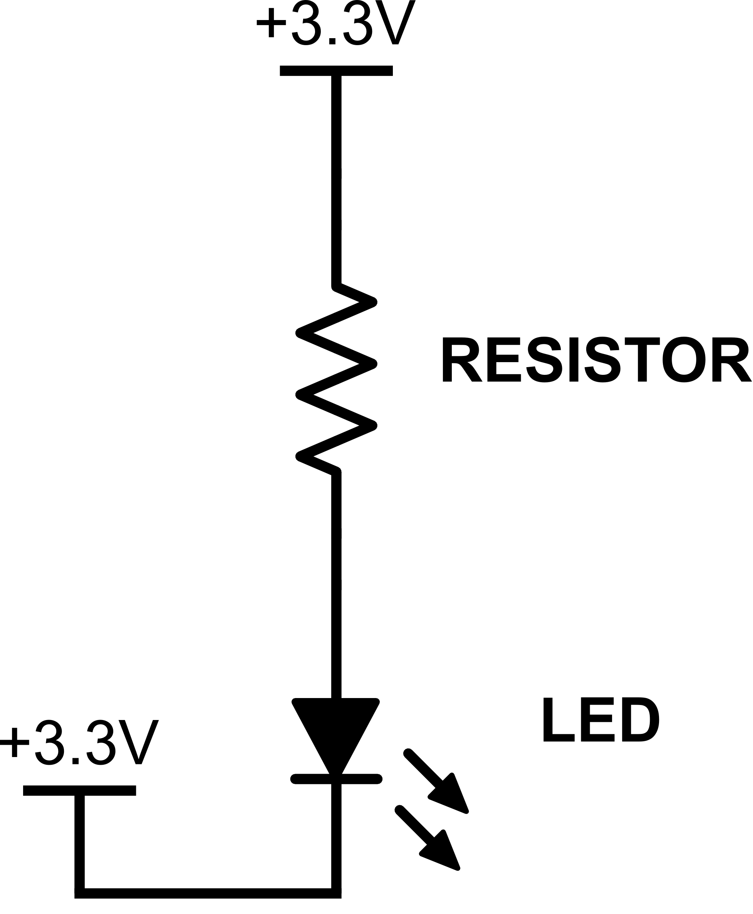
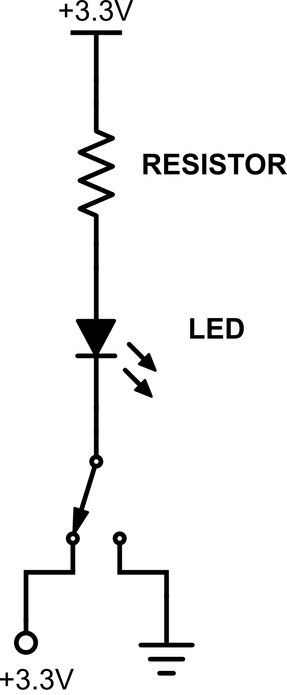
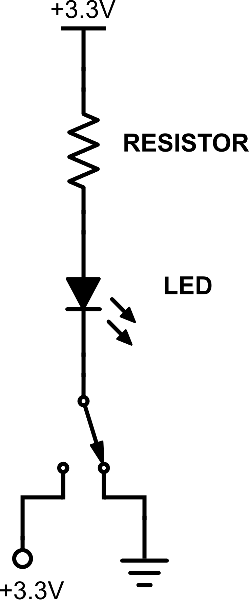
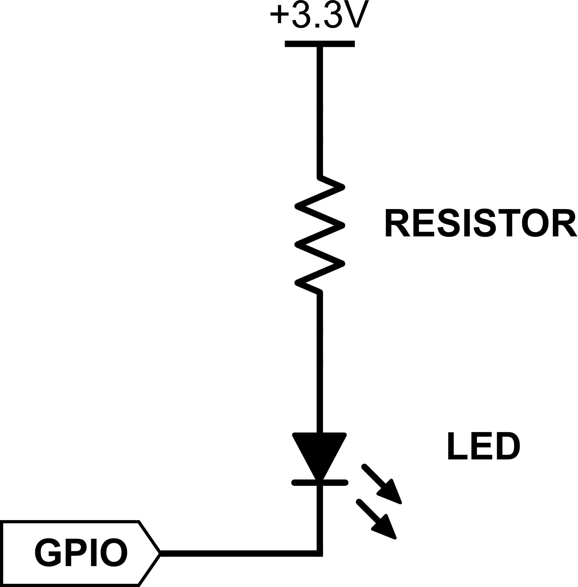

GPIOs as Outputs
As mentioned above, GPIOs are a great way for your computer code to control your circuits. The most common use for having your code control your circuit is to turn components on and off (like an LED or any other device that can turn on/off).
When a GPIO is used to allow our software to control our circuit, we say that we're "using the GPIO as an output":
Your code uses GPIO Outputs to control circuits in a very simple way — at any given time your code tells a GPIO pin to set its voltage low (meaning to 0V) or set its voltage high (meaning to 3.3V). By controlling whether a GPIO voltage is set low or high, your software can force your circuit to do something (or perhaps not do something, if that's what you prefer).
To understand this concept, we'll need to think back to a previous discussion about how and why electric current flows through a circuit. If you recall from our earlier discussion in , electric current will only flow through a circuit when there is a voltage difference between the beginning and the end of the circuit.
This is why, for our basic LED circuit, the LED will illuminate when we attach one side of the circuit to 3.3V power and the other side to ground. Like this:

Given that, it should also make sense that, if there is no voltage difference between the beginning and the end of a circuit, no current will flow. For example, imagine our circuit above, but instead of attaching the end of the circuit to ground, we attach it to 3.3V power, just like the beginning of the circuit.
The circuit would look like this:
Note: The symbol at the bottom of the image above is just another way to indicate power in a schematic — this is how power is typically represented when it's at the bottom of a circuit.
As you can probably guess, in the circuit above, no current would flow through and the LED would not illuminate.
Now, imagine that we wire a circuit — similar to above — but where the bottom of the circuit has a switch. And, that switch can be toggled between connecting to power and connecting to ground:
|  |  |
| GPIO Attached to Power (LED Off) | GPIO Attached to Ground (LED On) |
Based on what we discussed earlier, it should be clear that when the circuit is configured like the left-hand circuit above, no current is flowing and the LED does not illuminate. But, when the circuit is configured like the right-hand circuit above, current will flow and the LED will illuminate.
This is conceptually how a GPIO works. Using software, we can set the GPIO to either power or ground.
Note: There is no mechanical switch inside a GPIO — the above is just a model of how a GPIO works.
Here is a schematic representation of a GPIO within a circuit:
In the electronics world, we often use the term "low" to refer to ground. You might hear an engineer say something like, "Tie that component low," or "Set that pin low." That simply means to connect the component/pin to ground.
It's interesting — and sometimes confusing — to think about the fact that in the circuits above, when the GPIO is set low (attached to ground), current is flowing and the LED is illuminated. And when the GPIO is set high (attached to power), current stops flowing. We tend to think of current flowing when it's attached to power, not ground. But remember, the other side of the circuit is still attached to power, and it's the voltage difference that creates current flow.
This is why you'll sometimes hear engineers use the term "Active Low." It indicates that the GPIO needs to be set low (to ground) for the circuit to be active (turned on).
Finally, the opposite of "Active Low" is "Active High." Engineers design chips and circuits in different ways depending on how they want their devices to work. While the LED circuits we use work as Active Low, you may encounter Active High circuits elsewhere.